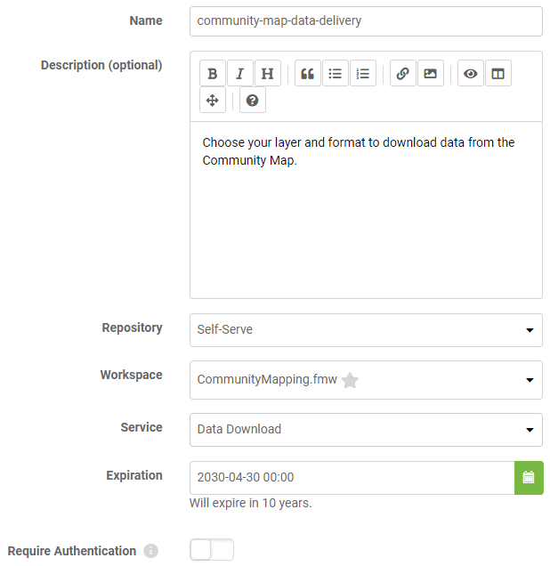
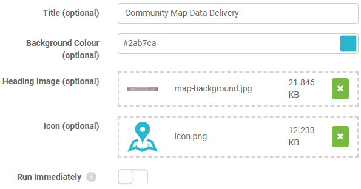
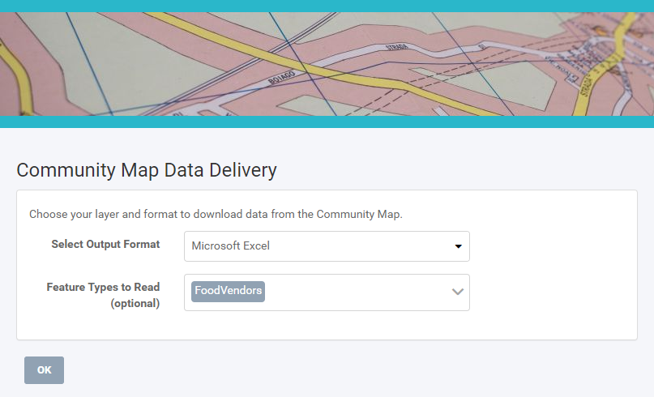

After completing this unit, you’ll be able to:
The word about self-serve data access is spreading around Fatima, Frank, and Jennifer’s municipality. Frank is getting more and more users interested in accessing his self-serve workflows. However, not every member of the municipality — and certainly not the public — have FME Server logins. As the FME Server administrator, Frank’s faced with the overhead of managing increasing numbers of user accounts or finding a way to provide users access to FME Server without creating accounts.
Thankfully he knows he can use FME Server Apps. Apps let you create custom web pages to provide a self-serve portal, allowing the user to upload data to be transformed by your workflow or to download data created as the output of a workflow. An FME Server login is not required to access an FME Server App. Sharing data and increasing accessibility is easy with FME Server Apps.
Frank wants to convert his self-serve workspace into a proper FME Server App. To do this, he logs into FME Server and clicks Server Apps > Build App.

He fills out the form like this:

After selecting a workspace, the Parameters section appears below. This section lets you pick which published parameters you want users to fill out. Frank wants to have users fill them all out, so he skips this section.
He also chooses to customize his app to fit his organization’s branding. He clicks the right-pointing arrow to the right of Customize to expand that section.

He fills this section out like this:

With the page filled out, Frank clicks OK. He is taken to a new page confirming his app has been saved. He is given a URL that he can now share with anyone wishing to access the community map data. With a customized header and icon, users won’t even need to know they are interacting with FME Server! All they have to do is go to the link, fill out the form, and receive their data.
Frank sends the URL to Fatima to test out. She clicks the link and fills the form out to download the FoodVendors data in an Excel spreadsheet.

It works great! She can even send this link to her colleagues in the Business License Office, who can now get on-demand up-to-date versions of the data without having to bother Fatima or log into FME Server. Everyone saves time using the FME platform.
Share your App with a colleague. Note that if you are using a locally-hosted FME Server, your App will be running on the IP of your machine and might not be accessible for someone else if you decide to share the URL, depending on your network setup.